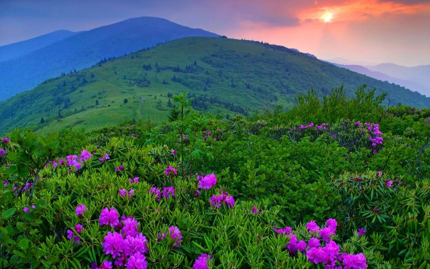

El Kailāsh es una montaña en la cadena Gangdisê (parte de los Himalayas), en Tíbet. Allí se originan algunos de los ríos más largos de Asia como el Indo (que desagua en el mar Arábigo), el Sutlej (conocido como Shātadru o Sutudrī), el Ganges y el Brahmaputra (que desagua en el golfo de Bengala)

Una montaña es una figura topográfica del relieve terrestre positiva, una eminencia natural que se caracteriza por su altitud y, más generalmente, por su altura relativa, o incluso por su volumen, pendiente, espaciado o continuidad.2 Aparecen como parte de un conjunto —una cadena montañosa, es decir cordillera, macizo, sierra...— o formando un relieve aislado.Nota 1Nota 2Nota 3Nota 4 No existe una definición única de montaña, un término que apareció en Europa entre los siglos X y XII.
Según sean los procesos que conducen a su formación las montañas toman formas muy diferentes: desde escarpes de los márgenes continentales y rifts en dominios extensivos, hasta cadenas de colisión y plegamiento, pasando por arcos insulares con volcanes en las zonas de subducción, sin olvidar el volcanismo de punto caliente o la contribución al solevantamiento por intrusiones.
